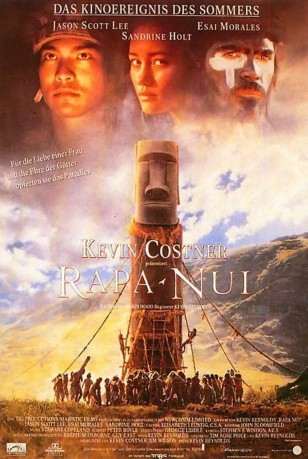

#12024 Rapa Nui - Rebellion im Paradies
Alternativ: Rapa Nui (Englischer Titel)
 
 IMDB-Wertung: 6.4 / 10
IMDB-Wertung: 6.4 / 10  Metascore: 0
Metascore: 0 
Lange bevor ein holländischer Seefahrer 1722 die entlegendste, von Menschen besiedelte Insel der Welt entdeckte, spitzte sich die Situation auf der Osterinsel zwischen den herrschenden Langohr-Aristokraten und der Klasse der unterdrückten Kurzohr-Arbeiter dramatisch zu. Zur Feier der alljährlichen Rückkehr der Rußseeschwalben, die an den ersten König Hptu Matua erinnern, bestimmt jeder Langohr-Clan aus seinen Reihen ein Mitglied für einen gnadenlosen Wettkampf. Wer seinem Oberhaupt als erster das Gelege der Rußseeschwalben unversehrt bringt, ist Sieger und kürt seinen Häuptling damit ein Jahr zum Vogelmann, den mächtigsten Mann der Insel. Erfolgsproduzent Kevin Costner und Regisseur Kevin Reynolds erzählen die dramatischen Ereignisse um die beiden erbitterten Wettkämpfer Noro und Make, die für die Liebe einer Frau zu jedem Opfer bereit sind.
Jahr: 1994
Dauer: 102 Minuten
FSK: 12
Land: USA Studio: Warner Bros.Tonspuren:
Untertitel:
Auflösung: SD (640x294) Größe: 1249 MB
Genre: Action, Drama, Abenteuer, Liebe, Geschichte
Regisseur:  Kevin Reynolds
Kevin Reynolds
Drehbuch: Kevin Reynolds, Tim Rose Price, Kevin Reynolds
Soundtrack: Stewart Copeland
Darsteller:
 Jason Scott Lee als Noro
Jason Scott Lee als Noro Esai Morales als Make
Esai Morales als Make Sandrine Holt als Ramana
Sandrine Holt als Ramana- George Henare als Tupa
- Rawiri Paratene als Priest
- Pete Smith als Priest
 Cliff Curtis als Short Ears
Cliff Curtis als Short Ears Lawrence Makoare als Atta
Lawrence Makoare als Atta Nathaniel Lees als Long Ear Chief
Nathaniel Lees als Long Ear Chief- Grant McFarland als Long Ear Chief
 Rena Owen als Hitirenga
Rena Owen als Hitirenga- Anzac Wallace als Haoa
- Eru Potaka Dewes als Ariki-mau
- Emilio Tuki Hito als Messenger
- Gordon Hatfield als Riro
- Frenxa Reuben als Heke
- Hori Ahipene als Overseer
- Chiefy Elkington als Fisherman
- Ruihana Rewa als Old Woman
- Mario Gaoa als Short Ears
- Willie Davis als Short Ears
- Te Whatanui Skipwith als Old Short Ears
- Wassie Shortland als Long Ear Chief
- Tania Simon als Koreto
- Rakai Karaitiana als Pure White
- Shane Dawson als Mud Colour
- Henry Vaeoso als Half & Half
- Angela Gribben als Long Ear Girl
- Karaitiana Beazley als Makita
- Jade Clayton als Ngaara
- Jenni Heka als Long Ear Girl
- Pitake Tuki als Timid Short Ear
- Liseli Mutti als Pua
- Michael Yost als Young Long Ear Boy
Datei: X:\1994\Rapa Nui - Rebellion im Paradies (1994, FSK12, 640x294).mkv seit 11.11.2019
Festplatte: Gemischt-01+Anime
 Es gibt insgesamt 67 Filme in der Gruppe '1994'
Es gibt insgesamt 67 Filme in der Gruppe '1994'